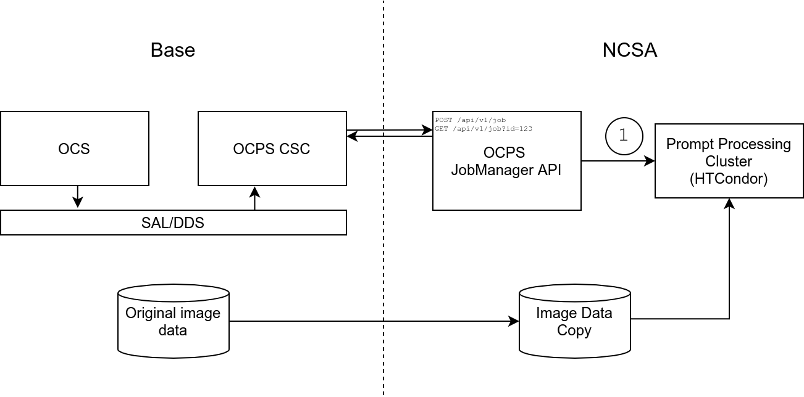

Rubin OCS Controlled Pipeline System (OCPS) prototype¶
Prototype¶
The prototype OCPS Job Manager is designed as an evolving demonstration of the emerging system.
The prototype consists of a server and a client.
- The server is a Tornado-based webserver written in Python, which runs on lsst-devl in order to execute HTCondor commands that are only accessible on that cluster.
- The client represents the OCPS CSC that will ultimately be submitting jobs and fetching the results. The client is a Python script that could in principle be executed on any machine, but the lsst-devl firewall blocks access to the port on which the server listens; hence, the prototype client must also be run on lsst-devl.
Job Type Specification¶
The available job types are defined in a jobs/job_specs.yaml file that looks like:
type:
# Alert Production pipeline: https://pipelines.lsst.io/v/daily/modules/lsst.ap.pipe/index.html
ap:
# The script to be executed by HTCondor
script: "jobs/ap_job.sh"
# Environment variables required by the job script
env:
- "AP_JOB_OUTPUT_DIR"
- "AP_VISIT_ID"
- "AP_CCD_NUM"
- "AP_REPO"
- "AP_TEMPLATE"
- "AP_CALIB"
- "AP_FILTER"
# Additional job type definitions...
This example shows a definition for a job type ap. The script parameter (YAML scalar node) specifies the script that will be executed by HTCondor. The env declares the environment variables that must be specified when submitting a job.
The script parameter will be revised to require specification of immutable code for reproducibility. For example, a git repo URL (from some controlled location) and specific git commit hash would suffice.
Server - OCPS Job Manager¶
Server configuration can be customized using environment variables:
API_PORT
API_BASEPATH
API_DOMAIN
API_PROTOCOL
Launch the API server, listening by default on port 8080:
bash launch_job_manager.sh
Client - OCSP CSC¶
As currently envisioned, the data (e.g. camera images) that form the input to the prompt processing jobs will be transferred from the OCS by an independent system; thus the input data is assumed to be accessible to the Job Manager as a Butler repo residing on some locally mounted storage.
The prototype client parses a config file to get the information needed to demonstrate the Job Manager API.
Construct the client config file config.yaml similar to this:
cat > config.yaml << EOF
data:
repo: "/datasets/des_sn/repo_Y3/"
template: "/datasets/des_sn/repo_Y3/templates/"
db: "/datasets/des_sn/repo_Y3/registry.sqlite3"
calib: "/datasets/des_sn/calib/"
filter: "g"
job:
output_dir: './output'
log_dir: './logs'
EOF
The client demo will use the values to compose the HTTP request according to the Job Manager API Specification
Run the client demo using the wrapper script run_client.sh, which configures the software environment using the LSST Software Stack.
bash run_client.sh
Job Manager API Specification¶
Note
For the latest definition of the API spec, which may not yet be implemented, see OCPS Job Manager API.
POST /api/v1/job¶
Submit a job to the HTCondor queue for processing.
Python example::
r = requests.post(
'/api/v1/job',
json={
'type': 'ap',
'env': {
'AP_JOB_OUTPUT_DIR': conf['job']['output_dir'],
'AP_VISIT_ID': image['visit_id'],
'AP_CCD_NUM': image['ccd'],
'AP_REPO': conf['data']['repo'],
'AP_TEMPLATE': conf['data']['template'],
'AP_CALIB': conf['data']['calib'],
'AP_FILTER': conf['data']['filter'],
},
'log_dir': conf['job']['log_dir'],
}
)
GET /api/v1/job?id=123¶
Get information and status for an existing job.
Initial demonstration of job awaiting data arrival¶
First launch the JobManager to listen for HTTP API requests:
/project/manninga/Prompt_Processing/OCPS_Job_Manager
manninga@lsst-devl01$ /project/manninga/Prompt_Processing/OCPS_Job_Manager/launch_job_manager.sh
2020-09-15 09:24:08,770 main INFO Running at localhost:8080/api/v1
Then run the client script, which spawns four jobs:
manninga@lsst-devl01$ /project/manninga/Prompt_Processing/OCPS_Job_Manager/run_client.sh
...
POST /api/v1/job :
{
"status": "ok",
"msg": "",
"job_id": "730f55f5cd6941e4ba047b06ed0e36dd",
"cluster_id": null
}
...
POST /api/v1/job :
{
"status": "ok",
"msg": "",
"job_id": "c2c5484c22a8434aa301e4f56d17d595",
"cluster_id": null
}
...
POST /api/v1/job :
{
"status": "ok",
"msg": "",
"job_id": "0f301a1cb6234c75b9b2f7d845348934",
"cluster_id": null
}
...
POST /api/v1/job :
{
"status": "ok",
"msg": "",
"job_id": "1f5db30204244fd1aea18219ea8d2d37",
"cluster_id": null
}
The JobManager shows the four /api/v1/job request responses:
/project/manninga/Prompt_Processing/OCPS_Job_Manager
manninga@lsst-devl01$ /project/manninga/Prompt_Processing/OCPS_Job_Manager/launch_job_manager.sh
2020-09-15 09:24:08,770 main INFO Running at localhost:8080/api/v1
2020-09-15 09:24:19,665 tornado.access INFO 200 POST /api/v1/job (::1) 80.59ms
2020-09-15 09:24:19,768 tornado.access INFO 200 POST /api/v1/job (::1) 83.14ms
2020-09-15 09:24:19,837 tornado.access INFO 200 POST /api/v1/job (::1) 49.21ms
2020-09-15 09:24:19,872 tornado.access INFO 200 POST /api/v1/job (::1) 16.99ms
In the background, JobManager has spawned four independent subprocesses that monitor the working directory for the presence of a “data” file named [job_id].dat, polling at a specified frequency (checking every 5 seconds in this case).
manninga@lsst-devl01$ ps -u | grep -E "(launch|monitor)"
manninga 3408357 0.0 0.0 113792 2060 pts/0 S+ 09:24 0:00 /bin/bash /project/manninga/Prompt_Processing/OCPS_Job_Manager/launch_job_manager.sh
manninga 3424510 16.0 0.0 147520 22912 pts/0 S+ 10:57 0:00 python monitor.py --id 1f5db30204244fd1aea18219ea8d2d37 --type ap --api_url http://localhost:8080/api/v1/monitor/complete
manninga 3424511 16.5 0.0 147520 22900 pts/0 S+ 10:57 0:00 python monitor.py --id c2c5484c22a8434aa301e4f56d17d595 --type ap --api_url http://localhost:8080/api/v1/monitor/complete
manninga 3424512 16.5 0.0 147520 22912 pts/0 S+ 10:57 0:00 python monitor.py --id 0f301a1cb6234c75b9b2f7d845348934 --type ap --api_url http://localhost:8080/api/v1/monitor/complete
manninga 3424513 15.5 0.0 147520 23076 pts/0 S+ 10:57 0:00 python monitor.py --id 730f55f5cd6941e4ba047b06ed0e36dd --type ap --api_url http://localhost:8080/api/v1/monitor/complete
When the “data” file associated with a job is created (manually in this case),
manninga@lsst-devl01$ touch /project/manninga/Prompt_Processing/OCPS_Job_Manager/server/0f301a1cb6234c75b9b2f7d845348934.dat
the relevant subprocess for that job notices the “data” arrival and triggers the launch of the HTCondor job initialization by requesting the internal API endpoint /api/v1/monitor/complete?id=[secret_key] (in this initial demo, the key is the job_id for simplicity):
Data file "0f301a1cb6234c75b9b2f7d845348934.dat" found. Making API request...
2020-09-15 09:25:10,318 tornado.access INFO 200 GET /api/v1/monitor/complete?id=0f301a1cb6234c75b9b2f7d845348934 (::1) 2.06ms
2020-09-15 09:25:10,317 main INFO Data arrived for job "0f301a1cb6234c75b9b2f7d845348934". Launching job...
After creating three of the four “data” files being monitored, there is still one subprocess running:
manninga@lsst-devl01$ ps -u | grep monitor
manninga 3409230 0.3 0.0 147520 22912 pts/0 S+ 09:24 0:00 python monitor.py --id 730f55f5cd6941e4ba047b06ed0e36dd --type ap --api_url http://localhost:8080/api/v1/monitor/complete